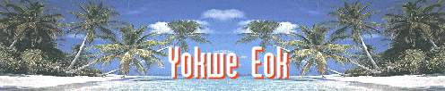
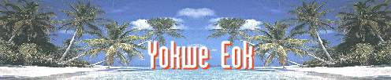
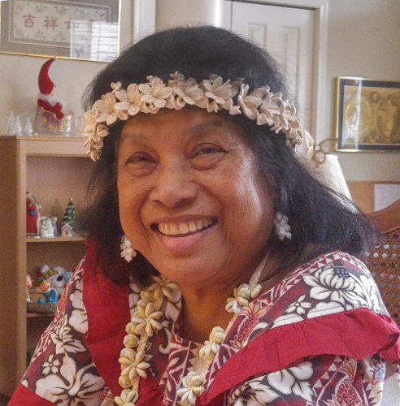
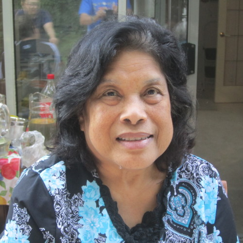
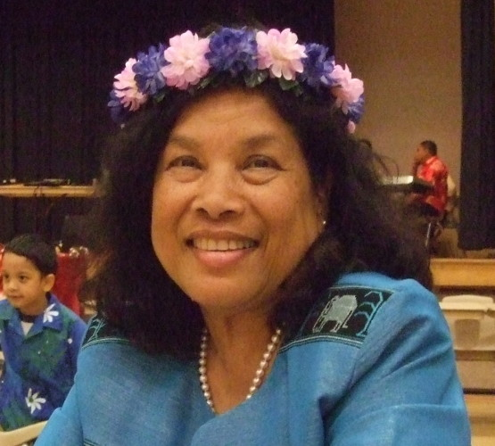
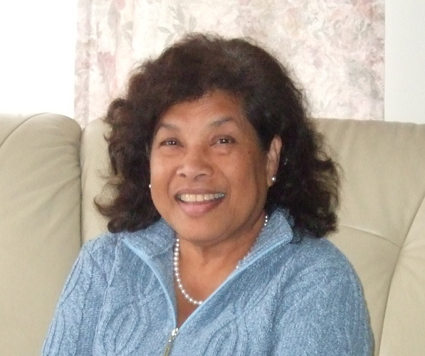
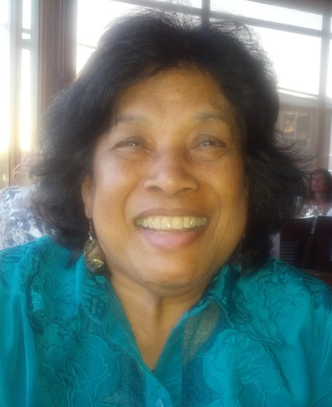
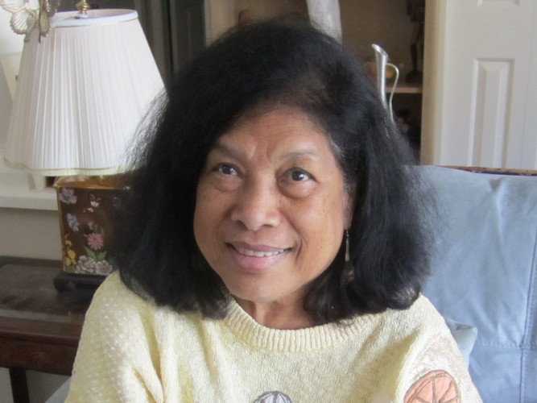

|
Penny Pahl passed away on November 11 (Remembrance Day in Canada, Veteran's Day in the USA), 2017, at the age of 70. Coincidently, it was at the 11th minute, of the 11:00 pm hour, on the 11th day of the 11th month!!! In the summer of 2017, Penny developed a sore on her foot that did not heal because of her diabetes. She was hospitalized on August 20, 2017, where a decision was made to amputate her foot, i.e., below the knee, because the foot did not heal and became very infected. This was done but the resulting surgical wound also did not heal and a second amputation was performed above her knee. While waiting to recover from this second surgery, she was suddenly affected by a deadly "super-bug" bacteria that was resistant to all her antibiotics. As well, Penny could not fight this "super-bug" due to having failed kidneys (she had been on dialysis for 4 ½ years) and general weakness from being bed-ridden in the hospital so long. The "super-bug" worked very fast, claiming her life in about 1 ½ days after discovery. Penny suffered daily with relentless pain and itching during the last months of her life and so it was in some way merciful to be released from this. She was sustained by her faith in God and she never cursed Him for her ailments but rather she always felt His love for her and we believe she is freed from the cares of this earth and is now in glory. We all miss her dearly but we are happy that her suffering and trials are done. Two memorial services were held for Penny, one at her home in Canada on November 25 and another by her Marshallese family and community in the USA on December 4. Below are several links to videos that you might find interesting. 1. At the memorial service I put together a sample of Marshallese music as a prelude. I thought that people who do not know the Marshallese language would enjoy hearing this "style" and language as they think about this special loved one and unique friend from the Marshall Islands.(Marshallese people might be taken aback at my choices for a memorial service, but they do sound nice and give a flavour and show appreciation for beautiful Marshallese music to those who do not know it.) https://www.youtube.com/watch?v=pQOyaKuelvE&t=50s 2. We put together a short video presentation to recall some highlights of Penny's life that we think people would be enjoy seeing. https://www.youtube.com/watch?v=LElQAVQNzWM&t=93s 3. The memorial service was very sincere and moving. We hoped to record the entire service but the technical person forgot to record any audio and so there is no sound. We tried to capture the highlights of the service by recording important presentations the next day to keep as a memory and to share with others. What is missing is the devotional message given my Susan Dreidger and the special songs sung by Gio Sutjiadi. https://www.youtube.com/watch?v=MGRuZW4vGdI&t=6s 4. A second Memorial service was held in the Seattle with Penny's Marshallese family and community. They did it the "Marshallese way". It was very moving and meangful and we are so thankful that this happened. I hope that you will enjoy these final tributes to our loving wife and mother, Penny Pahl.
Penny's Life Journey
Penny was born about 70 years ago on October 5, 1947, at the center of the Pacific Ocean in the Marshall Ilslands. These are incredibly beautiful islands that most of us only dream about visiting. Each island group has a "chief" or "iroij/leroij" and she was raised in the chief's household. By many reports, she was spoilt, stubborn and naughty; one of these characteristics stayed with her all her life. She did the normal things a person there did, but after the 9th grade, she was selected for a scholarship to go to the fairly prestigious Bethania High School, a girls' mission school in a completely different island nation, Palau, for grades 10 to 12. It was about 4,000 km from her home and took over a month to get there by ship. There were only a few other Marshallese girls at Bethania High School, and it was a tremendous challenge to be so far away from her family, culture, and language. Although being spoilt, stubborn and naughty did not help, she persevered and graduated in 1968. In fact, she survived the school and the school survived her. She then returned home and worked for a year in Majuro, the main centre of the Marshall Ilands. During that period, she and several other Marshallese received a scholarship for further education in the Philippines. I can't help think that her family was very happy about this, but knowing her "independent thinking" (notice that I did not say "stubborn") it is not a surprise that she chose to travel about 5,500 km to study, once again far from her family and culture. This was an even more commendable and adventurous undertaking considering the very limited opportunities for higher education for girls those days in the islands. The school, FEBIAS College of the Bible, was also a mission school. After five years, she graduated with an Arts degree in Christian Education. The added side-benefits of this experience were that she became less spoilt, less naughty and she learned the Tagalog language. At this point, Penny made a decision that would turn out to be one of those proverbial "change your life forever" decisions. She appreciated the experience and education she received at Bethania High School, so she offered to return there to teach for a year. It was sort of a "giving back" for what she had received. It so happened that at the related boy's school on Palau, there was a volunteer teacher from Canada, Gerhart Pahl. (The Lord really does work in mysterious ways, doesn't He!) Romance blossomed after spending time together watching the moon come up and glisten on the waves which were breaking over the reef, and feeling the warm gentle breezes that rustled through the coconut trees. On one of their first dates, Gerhart tricked Penny into eating a spoonful of wassabe (Japanese horseradish) under the pretense that it was actually green tea ice cream. Despite this terrible trick, she still agreed to his marriage proposal, and on July 26, 1975, they formalized their commitment to love each other to the end of their lives. Gerhart was keenly aware of her commitment and willingness to follow him wherever it might lead, knowing full well it may never take her back to her home island, family and culture. Penny's decision was truly remarkable, and twe thank God for her willingness to give up so much to be a part of Gerhart and his family's lives. They stayed in Palau. Later that year, the young family moved to the Marshall Islands where Gerhart taught at the government high school for four years. This was a very interesting time in "fitting in" as Penny had been away 10 of the past 11 years, and Gerhart was new to the family and culture. Penny's family were very loving and accepting, and this period was an especially good time for them. During these four years, two more sons were born: Wesley in 1978 and Lionel in 1980. Penny's love for Gerhart and the family was particularly evident as she sometimes had to make choices about whether to follow her Marshallese culture or do what was best for her family. The family always won. Gerhart was not a trained teacher and after teaching for ten years he felt that he had accomplished all he wanted to in this area. With an eye to the future, he moved the family to Hawaii in 1981 where he did graduate work for an MBA degree. Penny's role was critical to this achievement, as much of the child raising duties fell into her lap to enable Gerhart to concentrate on his studies. She would take the boys to beaches, picnics, and kindergarten - anything to keep them happy and active and, hopefully, out of trouble. They could not afford a car at this time, so all this had to be done by walking and taking public transportation. After Gerhart graduated, he worked for two years and was then able to help her a bit more. It was in 1984 that Neil was born. Gerhart had been working in the USA on a series of visas. After four years, these ran out and the family was forced to leave the country. So, they came to Canada in 1985. Penny again was in a foreign land away from family and home. This time she was also away from the perpetual warm temperatures of the tropics, and was exposed to snow. What a shock, but she never complained. In fact, she was usually the only Marshallese in all of Canada except for 1 or 2 others, from time to time, as it is difficult for Marshall Islanders to immigrate to Canada. In 1986 the family moved to the Richmond, British Columbia, which in the Vancouver area. Life was not easy for Penny as Gerhart had to travel a lot in his new job. Again, Penny had to take the major responsibility for bringing up the four boys. Just getting them around to school and sports was a gigantic task. But eventually, the boys left home to build their own lives, and in 2008, empty nested, Gerhart and Penny moved to South Surrey, British Columbia. In the past two years, Penny filled in a missing part of her life, namely, the joy of having grandchildren. The Lord blessed her with two grandchildren, Elliot and Valerie, through Neil and Kamy. It is just too bad that her life has ended before she saw them grow up. But they will certainly be taught about their wonderful grandmother. Unfortunately Penny passed away before seeing Chris's marriage to Nena in January 2018, the 4th "Mrs. Pahl" in our family line. |